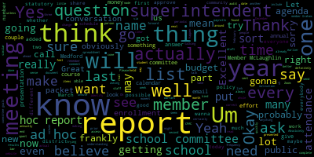
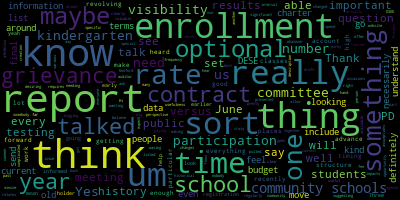
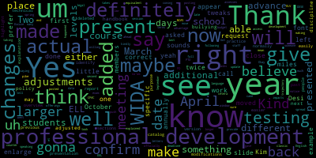
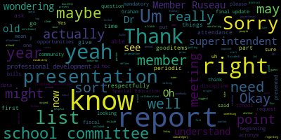
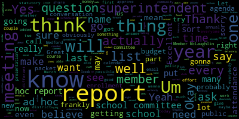
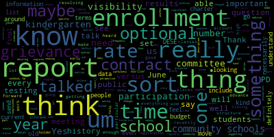
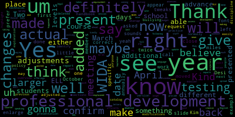
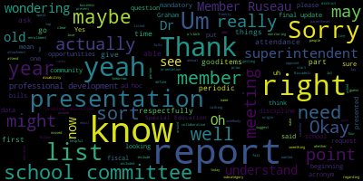

total time: 36.29 minutes
total words: 5712

{kind=link}
total time: 9.55 minutes
total words: 1410

{kind=link}
total time: 4.26 minutes
total words: 606

{kind=link}
total time: 10.55 minutes
total words: 1804

{kind=link}
total time: 3.43 minutes
total words: 514

[Unidentified]: yeah yeah
[Ruseau]: Hello everyone, we're just going to give one more minute to member Graham.
[Hurtubise]: There she is.
[Ruseau]: Alrighty, I think we're ready to go. It's 4.02 and I will read the notice for our meeting. Thank you everyone for coming to the Rules, Policy and Equity Subcommittee meeting. Today is January 13th, it's 4.02. Please be advised that Today at 4 to 5pm there will be a rules policy and equity subcommittee meeting held through remote participation via Zoom. Can you hear me okay? Good, thank you. Pursuant to Governor Baker's March 12, 2020 order suspending certain provisions of the open meeting law, and the governor's March 15th, 2020 order imposing strict limitations on the number of people that may gather in one place. This meeting of the Medford School Committee will be held, will be conducted via remote participation to the greatest extent possible. Specific information and general guidelines for remote participation by members of the public and or parties with a right and or requirement to attend this meeting can be found on the city of Medford website. For this meeting, members of the public who wish to listen or watch the meeting may do so by accessing the meeting link contained herein No in-person attendance of members of the public will be permitted, but every effort will be made to ensure that the public can adequately access the proceedings in real time via technological means. In the event that we are unable to do so, despite best efforts, we will post on the City of Medford or Medford Community Media websites an audio or video recording transcript or other comprehensive record of proceedings as soon as possible after the meeting. The meeting could be viewed through I'm not sure if we actually are on metric community media on Comcast Channel 22, Verizon 43. I'm not sure if that actually is the case today, but since the meeting will be held remotely, participants can log in or call, log or call in by using the following link or call in number. The Zoom link is long, mpso02155-org.zoom.org. The call in number, if you want to call in, which you obviously would be able to do, because you can hear it. It's sort of this chicken and egg thing about this posting, but it's, where's the phone number? My apologies. 312-626-6799, meeting ID 97562725, 433. Let's see, if you have any additional questions or comments, you can submit them via email by sending them to me as the chair to pruseau at medford.k12.ma.us. Please include your first and last name, your Medford Street address and your question or comment. The agenda for tonight is that Wednesday, January 13th, we will be meeting to begin work on a periodic report schedule referred to committee on February 2nd, 2020 by the motion, given that several periodic reports are required by law and regulation, past practice and best practice, the rules, policy and equity subcommittee shall promulgate an annual schedule of such reports to provide the superintendent, the school committee and the public a transparent and concise understanding of when to expect these reports. I believe we should probably take attendance. Goodness. Member McLaughlin. I'm probably getting that one. And Member Graham.
[Graham]: Present.
[Ruseau]: And Member Ruseau, present, three present. Excellent. So I sent an email earlier this week. Thank you everyone for coming, by the way. I sent an email earlier this week, all of the members asking that send me an email with any suggestions for reports that they know we already get, or reports that they think we should be getting. And I also reached out to school committees across the state through our distribution list to ask the same question and did get a couple of responses from other districts. And of course, the superintendent and her staff have their own schedule and calendar as well for when certain reports will be created. Part of the motivation for this, it was to, excuse me, was to, well, there was lots of motivations, but one of the motivations was that, you know, when new members come in, they might wanna know something, an entirely reasonable thing. And, you know, you come in and if you ask for that report, it might seem perfectly timely to do so right then and there, but if it's an already scheduled report with a time and date that it was going to arrive, adding more work to the superintendent's plate for a report that she will also have to give us that, you know, if it's a November report, asking for it in February doesn't make a lot of sense. So efficiency was certainly part of it. And so we have, I have a, spreadsheet that I can share, if that makes sense. I'll do a screen share. I just got a very interesting advanced options on my share button. Let me see. Okay, here we go. Okay. Can you all see my spreadsheet that I have up?
[Edouard-Vincent]: Yes. Kind request. Could you just make the font maybe 125 or 150, just so it will appear a little larger?
[Ruseau]: Absolutely. Yes. Let's see.
[Edouard-Vincent]: Yes.
[Ruseau]: Hold on one second. Now it's scrolled on the wrong way. Here we go. Um, is that look okay to you?
[Unidentified]: Yes. Perfect. Excellent.
[Ruseau]: Great. Um, so, um, this, this is sort of a draft and, um, many of our reports may not have official names, which is a challenge, I think, for, uh, you know, I call it one thing and you call it another. I think we do need to name our reports so that we can, um, accurately discuss them. Um, I received an email from, um, member Van der Kloot, our most senior member, of course, who has probably seen more reports than the rest of us will ever see in our lives. And I've added those to this list as well, the superintendent, and I believe, and certainly her executive assistant, and perhaps others have added a few things as well. I'm not really clear what people think on how we should approach this. I think that We should try to worry about getting a complete list before we get too into the weeds about the frequency. I think the frequency for many reports will not be very exciting. Sorry, the scrolling is. Did you just lose the sharing?
[Edouard-Vincent]: No, it just moved, I think, to the right. And if you could slide back to the left, we could see it.
[Ruseau]: Yeah, the sharing. Try that again.
[Edouard-Vincent]: Maybe because I asked you to enlarge it, but yeah.
[Ruseau]: One second. Zoom is not allowing me to even click around on the spreadsheet right now.
[McLaughlin]: Well, right now we can see it, Member Ruseau. So in a moment ago, it just went to the right and we couldn't see the first column, which is sort of the critical one. So right now it's good. Okay.
[Ruseau]: There seems to be bouncing around going on and I'm not clicking. So we can talk.
[McLaughlin]: Okay, may I ask a question?
[Ruseau]: Sure, please.
[McLaughlin]: So I'm just trying to get up to speed on the origin of this list. And is this the first time, sorry, if this wasn't an attachment in an email and I missed it, is this the first time that this entire list is being shared?
[Ruseau]: Yes, yes.
[McLaughlin]: So there was no attachment in an email that I missed, right?
[Ruseau]: Correct.
[McLaughlin]: Okay. Thank you. Um, and I am curious about the origin of many of the items on this list. Is this something that was a layover from previously requested reports that were formerly listed in old business as part of the, um, uh, I know when I came on board in January, there was a list of several reports that were sort of under old business for school committee that, you know, we agreed upon at some point that, you know, we could go off and defer to the rules policy and to the subcommittee. So is this that in addition to other requests that you had, or is this, yeah, can you give me some orientation, please? Sorry.
[Ruseau]: Sure, yes. So this is, at least as I intend it, is explicitly not including anything that's an ad hoc report. So anything like, you know, we've got some question that comes up in the meeting, and we want to get answers to it. That aren't things that we probably should have been asking every year, for instance. So a lot of those reports that were on that are on that list, I think are ad hoc reports, but some of them are not some of them are like, why isn't this just an annual report? So there isn't a, it's not a black and white, as to what this list is. I am not sure.
[McLaughlin]: Sorry, just a follow up. So then, yeah, I would love it just a definition of what the report actually is a periodic reports for school committee. So I would just love to know, you know, could we add the ad hoc reports here as well? Like, I don't know. I'm not understanding the difference between the reports. And then if I could respectfully request that yeah, maybe we just have some, we can talk about some, you know, continuity in the way that they're listed, whether it's alphabetically or categorized or what have you, just so that we can, I need some sense of where things are, if I could.
[Ruseau]: Yeah, I would say that the ad hocs probably shouldn't be on here because similar to the effort we did in December with the holiday, you know, the holiday events, it's, you know, here's the list the superintendent annually will go through and play it forward. And we will know that there's two meetings in February and these two things have to happen in February and she's gonna put them on the agenda ahead of time. One of the things that became evident as I worked on this list today and as the superintendent and Susie added a bunch of other items is that this is a, well, frankly, it's a massive list. And one of the things that I just dawned on me is we don't have a column for whether or not it's actually just in our packets, or is it an actual conversation on the agenda? Because some of these things may well be things that are just like, here's this document that goes in your packet and is available to the public, but we don't necessarily have to have a presentation. Many of these things, of course, do need presentations. But if we quickly end up with far more reports that we all agree we need to get, then there are days in the week kind of thing. Then we'll have to either prioritize and take some off the list or identify them as being, you know, FYIs that are in our packet. And I believe there have been a couple that, you know, have just been in our packets. They're not on the agenda per se. They're not conversation points. And then we can, of course, make them conversation points if there's something about that particular one. Every year, we talk quite a bit about enrollment, attendance, which has often been sort of wrapped up in that conversation. And I've always found it very confusing that they're together, because to me, attendance and enrollment are not the same. Unless, of course, we're talking about doing the enrollment report, then attendance matters. But I would like to know things about, you know, our attendance throughout the year. And that's very different than enrollment. So whether or not we would have an attendance report at every meeting or every couple of months that is simply at the elementary level, attendance was at 96% or whatever, that seems to me like on the surface, like a report that would just be in our packets as an FYI.
[McLaughlin]: May I just as a follow up, so just so that I understand, so you're definite, what would be, how would you define ad hoc reports and how would you define what is on this document?
[Ruseau]: An ad hoc report is a report that's a one-off.
[McLaughlin]: that is asked for on the floor on one occasion during a school committee meeting, as opposed to these, which would be annual presentations. Is that right?
[Ruseau]: Yeah, yes. Yeah, the ad hoc report would follow the ad hoc report policy we passed, I think a year, I think a year back. And then these would not be conversation pieces in that when we approve the schedule, When this goes forward to the full school committee and we approve it, we're not gonna ask the superintendent to put a CPAC presentation on the agenda. Like if we say the CPAC agenda presentation will happen the first meeting of March, I'm just making that up, then we don't have to remember to ask her every year, every first meeting of March, she will put it on the agenda because this is our expectation. And I'm just making up those dates off the top of my head. So that's the difference is that this is the, here's what you're gonna get through the year, both as a new member and frankly as a not new member. Because sometimes I know I get questions from constituents that ask me a specific question and to be able to have a list of reports and go, oh, that answer would have been in the district improvement plan and that comes out.
[Joan Bowen]: But it has been stolen from him by the radical left. Stop the steal.
[Hurtubise]: Stop the steal. Well, I think Susan has something to say. Stop the steal.
[Unidentified]: Stop the steal.
[Ruseau]: I think I muted myself. Melanie, were you still talking? I'm sorry.
[McLaughlin]: I did have more questions. Thank you, member Ruseau. So I would just respectfully request that maybe we give this a very clear title at the top. So as opposed to periodic reports for school committee, which frankly could also be an ad hoc report, cause they are periodic. I would suggest, you know, something to the effect of annual slash biannual reports for school committee. Sorry. Oh, some of them are quarterly.
[Ruseau]: Yeah, no, if it is periodic in any way, shape or form to me, it is definitely not ad hoc. Okay. It may not be yet that if we consider it periodic, but like if, if we designed an ad hoc report the first time and at the conclusion of the report, we're all like, yes, this was good. Yeah. We definitely should have had this information on a quarterly basis or annual basis. Then it to me no longer ad hoc reports should be. Every time you ask for the report, you go through the whole ad hoc report process, which I would never wanna do if it's a report we should get quarterly or annually even.
[McLaughlin]: Okay, I just wanna make sure that we're really clear and maybe that's part of this process. And so what is the goal that you would like to achieve in today's meeting?
[Ruseau]: Well, I would like to achieve getting the list as complete as possible. Now we, some of these things, like the wider results, I vaguely remember those being presented. Sorry about the scrolling. I do not know what the problem is. Let me try my other. Nope. And, So getting the list as complete as possible and the superintendent and Susie, and frankly, I think other administrators might want to weigh in on that. And then, you know, some of these will need names that are a little more understood. We have this, you know, some of these I've taken off of other school committees, websites, and some of the email responses I got today, like, you know, the prior year fiscal year, draft audit, and then the final, you know, on the shore collaborative where I'm the chairman, we actually do exactly those two things each year. And I'm assuming we do that here too, and I just don't remember, or we don't call it that. And, you know, the school committee seems like it should have to approve the annual audit, but I don't know, maybe that's, but I mean, this came from another school committee and they do this. Um, if it's not necessary and they just like to do more, then I'm okay with removing items here. Um, you know, we do have to acknowledge the bandwidth involved with a lot of this stuff. Um, and, uh, there were plenty of other items that were not, that are not on this list that I got from other school committees. And, um, when Cambridge has many other reports, well, Cambridge also has, um, you know, a different set of resources to really do anything any member probably asks. So I think that's part of it. So but getting this list as complete as possible, I'm gonna try to scroll over, see what happens.
[McLaughlin]: Member Ruseau.
[Ruseau]: Yes.
[McLaughlin]: Do you think we might be able to start, you know, at the either, you know, bottom or top or wherever you want to start at the list and go through them so that we understand, like I, you know, the acronym WIDA, I think you said, is lost on me. So I'd like to, I guess I'd like to go through and just find out, is Peter on here monitoring? Sorry, Dr. Cushing, are you here monitoring, please? We have people we have. We have somebody's hacking in.
[Edouard-Vincent]: I see that I'm gonna, um, see if we can get him on the call. Thank you. I'm gonna work right now.
[McLaughlin]: It's very upsetting on a day like today, frankly. Um, anyway, I'm sorry, Mr. Member Ruseau. So I'm wondering if we might be able to go through the line items, especially as a new member. I need some orientation for each of the line items so that I can better understand. Thank you.
[Ruseau]: Absolutely. I'm going to stop my share and maybe that's the chat is maybe the chat is causing some of this.
[Unidentified]: All right.
[Ruseau]: One moment, my apologies.
[Hurtubise]: Okay. Chair, are you able to see it all now?
[Ruseau]: again, I should say. Okay, great. So yeah, I think that makes sense to go through it. You know, the other columns in here, I, you know, I've been adding columns, frankly, as the day has gone on. Obviously, the report name, the report, the meeting type, I realized that when I added the MCAS results and accountability overview, we actually have a meeting every year on this, and it is a committee of the whole. And so I realized you know, and some of these other meetings may well make more sense to be committees of the whole than a regular meeting. The type, I just sort of made this up, but like finance, special education, HR, presented by, you know, I just added that, but, cause I thought, you know, the PTOs do the PTO report presentation. It's not anybody in the administration, whether they're statutory or not, I think it's something we, can get answers to. I don't really think we have to talk about it necessarily unless we have a disagreement. The frequency is obviously a conversation. For instance, the warrants and payrolls, all of our meetings right now do have it, but my understanding is that the law says we only need it actually once a month. So I'm gonna perhaps recommend we reduce that so that every meeting isn't sitting there going over these when we could just do it once every other meeting. hours of effort is a nod to, I think, understanding the hours of effort will be helpful should we need to cut anything out, or if the superintendent says, I like it all, there's literally, I need four more staff or something like, if that's what the superintendent says. When it's expected is sort of related to the frequency, but some things are due in the fall, some are due in the spring, And then the description that's, I think really gets to the heart of what member McLaughlin, what you were speaking to. And I think that that needs to be filled out dramatically on most things. I did add it for four reports here that, you know, I have a technology report, a health report, burn report, which is how much of our money have we spent so far this year in an HR report. You know, just like with our ad hoc report policy, I think it, you know, for some of these reports, it might be good to actually identify exactly what it is we wanna know. Because frankly, there's nothing worse than getting there to the meeting. Somebody has spent an obviously spent a lot of time preparing a report. And then the first thing we do is ask a question for which the report doesn't answer, especially when it's something that they probably actually already did know, but they didn't know we would want to know. and I think a lot of those things we as members can put it out ahead of time. And so do we really want to go through, I mean, I'm fine with we can go through each of these quickly and just make sure we understand what they are. That makes sense?
[McLaughlin]: Yes, please.
[Ruseau]: Okay. It's only 427. I felt like it was later because it got dark suddenly. So the enrollment report is the, two reports that are done each year that are sent to DESE that say, how many students do we have? These are critical reports from a financial perspective where we, all of September, I think it's the building principals, work feverishly to identify every student that they actually have so that we can get that report right. And then I believe it's done again in March. Is that correct, Superintendent?
[Edouard-Vincent]: Um, I believe you're close. I know it's for October. Definitely. In, um, the first meeting of April, uh, we have to do it twice to Desi. I can confirm, uh, the dates I'd prefer to confirm the specific date with Kim miles, but, um, to present it in April, that sounds about right.
[Ruseau]: Thank you. And you know, the, um, the April one, you know, may just be one of those things where we throw it in the packet, if it's not a really worthy of a conversation, but, um, the fall one is a very important thing. Attendance, again- Excuse me, I'm sorry. Yes.
[McLaughlin]: So in the purpose description, it'll be written so that a lay person, so that I am, or I'm happy to help if somebody needs it or if this needs it, but that a lay person or a community member can read this and know exactly what is being said, right?
[Ruseau]: Absolutely. key and part of, I believe that was part of the language and why we did this was, you know, we will publish this and the public should be able to read it, understand what it is. You know, the field that includes all the data elements, the public may, you know, their eyes may glass over on some of those, but, you know, the description of what the report is definitely needs to be easily understood. Um, warrants and payrolls are pretty obvious.
[McLaughlin]: They're not. I'm sorry. I'm so sorry. No. So attendance is obvious, right? So it's what our attendance rates are, I assume, right?
[Ruseau]: Sorry. Can you repeat that? My phone was ringing in my ear.
[McLaughlin]: That's okay. Attendance, I assume, is what our attendance rates are or dropout. Is that sort of? Yes. Yep. Warrants? I don't know what warrants is. Those are the bills. Oh, a fancy name for bills. So I would just, you know.
[Ruseau]: Yeah, I mean, I'll put that in the description, but warrants are a little different than the bills. Some school committees, the secretary will literally sign every check. And my understanding is the law changed some number of years ago to allow the secretary to sign a piece of paper that says what all the checks are and not have to sign every check by hand. Um, so that a warrant is different than signing the payment directly.
[McLaughlin]: Um, so maybe we could just put warranted in parentheses bills so that people sort of sure. Thank you.
[Ruseau]: Um, payrolls are payrolls. Um, the. Open house schedule for the schools. Um. Which I know that's in one of the subcommittees. that. Um the CPAC annual CPAC presentation. Is there a better name for that, Mayor McLaughlin, that you're aware of?
[McLaughlin]: I would just actually, um, spell out the acronym. Whenever we have an acronym, I would spell it out first, and then in parentheses, the CPAC.
[Ruseau]: Okay, yep, I'll go through and do all that, um, for sure. Um, the final year update, uh, from the final update from the prior year fiscal year, um, that actually, uh, Mr. Murphy gave us that this year, and I thought it was excellent and crystal clear. I'm not sure if there was a name on it. I didn't take each of these and go through our last couple of years of packets, even though I have them, to find out whether there's a real name that is preferred. So this isn't to try and get us to a nice, happy name on everything. committee goals.
[McLaughlin]: Yeah, so for the final update prior fiscal fiscal year. Can I just ask that we again just use some very elementary language? Just, you know, final budget update prior physical fiscal year.
[Ruseau]: Yeah, it's not budget, but yes. All right, this one. This one was like, you know the accounts. What's what's in the money?
[McLaughlin]: Where's the money that we have counting final update? Yeah, okay. Final update some more. That is the familiar word to everyone.
[Ruseau]: Sure. Yeah. Um, so this one I found actually a couple of different committees do this. And I know that from our, um, sorry.
[Edouard-Vincent]: I believe we can one of our members.
[Ruseau]: Oh, I'm sorry. I can't see everybody. Oh, Jenny. Hi. Can you unmute yourself? You can't unmute. Let me see if I can make you a, um, I cannot make you. well, actually ask to unmute. Maybe that will give you the freedom to, there you are. I think you're unmuted now, Jenny.
[Graham]: Hi. I did have a question about the enrollment report, which I've been like waving my hand like a crazy person all this time and nobody could clearly see me. So we have talked on a number of occasions about, you know, desiring, wanting, needing information about our charter school enrollments and students. And we don't have any visibility into that right now. I'm not suggesting necessarily that that is part of the enrollment report because the enrollment report means something very specific to DESE. But on this same frequency, I believe that we should have visibility into how many students we are paying to send to charter schools from Medford Public Schools. So and I what I don't know, I don't think it necessarily has to be at the same time. But I think, you know, on a similar interval, that is a report. And I was looking back to the old list of reports that was definitely on there. And that really should be presented to us because it has significant budget impacts.
[Ruseau]: Great, thank you. Member McLaughlin.
[McLaughlin]: Thank you. So two things, if I may, through a member or so. When we're talking about looking back at the old list of reports, I'm wondering what old list of reports, if you're talking about an aggregation of looking through all previous meetings, or is there actually a list of old reports?
[Graham]: I'm just looking at an old agenda.
[McLaughlin]: Oh, OK. Thank you. And then the other was regarding enrollment as well to member Graham's point, charter school enrollment. And I would also say out of district.
[Graham]: I also think when you talk about the enrollment report, You know, whatever Jesse is requires is one thing, but I think from a from a usefulness perspective for for us and really for the public. I think our enrollment reports really should reflect some number of years of history. So, you know, I don't know if that's the same report. And I feel like you can get that information. You got to go digging around on the DESE website. But you'll will we regularly hear in the community people making assumptions about our enrollment being one thing or another. And we shouldn't have to like dig or even spend a minute to ask somebody for something special to be able to answer those questions. It should just be really clear, like, you know, has our enrollment changed? Yes or no. And it should be just one of those things that's available on the report. And if it can all be kind of pulled together at the same time, I think that will allow everyone sort of that opportunity to understand our our current context as it relates to like past history. So when we talk about budget changes versus enrollment versus all those other things, having some sort of historical data there, I think would be really valuable. So that may move it like really far from like the DSEE report in terms of its creation, I don't know, but I think it would be very useful.
[Ruseau]: Yeah, thank you. I do think that a lot of these reports, frankly, all of these reports should have sort of a background document similar to we did for the ad hoc report. In the ad hoc report policy, we ask the person submitting it to say, well, what do you wanna know? What are your questions that you're trying to get answers to? And, you know, There, you know, as a member, I know I care very much about the historical context around, you know, is our enrollment growing or shrinking, or is it kind of just fluctuating normal? You know, those are all really important questions. So rather than having a report that comes before us, we ask a pile of questions for which the answers aren't available because, you know, that person isn't sitting in front of an Excel spreadsheet. You know, what are, I think many of these reports Um, which obviously I think is a little outside of the scope of this particular listing that we're working on, but should be its own effort. Um, should include a list of what are the data elements we want to know, you know, and what are the questions we as members are trying to get at? Because I don't think there's anything particularly unique about, I say it out loud, everybody's always like Medford special and everybody's special. Um, but you know, the questions we want to ask about enrollment and all these other questions are the same questions that school committees across the country, frankly, probably ask. And so I think all of that can easily be listed, and then we can work on the format of each of these. And I mean, the superintendent is, I can't say she's new anymore, but she's still pretty new and she has new staff. And even in just the last year, they have really made changes to some of the reports we get. And I feel our significant improvements and look forward to more of those. So I agree that we need to include the historical data on many of these things, frankly, I mean, attendance. And I will go through and fix the titles of any of these acronyms that are here for the moment. Committee goals. My understanding is we're supposed to actually have committee goals. every year. And if you ask me what our committee goals are for the last couple of years, I'm not sure I can answer that question. And so I put this on here. These are committee of the whole actually. Well, I don't know if that one is. So seems like we should really be doing that, whether it's annually or biannually, I don't know, but let's see, that's annually. The district improvement plan, the school improvement plans, we get those. Those, I believe, are statutory. Is that correct?
[Edouard-Vincent]: Yes, and they're done annually as well.
[Ruseau]: Thank you. Fiscal year draft. Wait, didn't I already cover the draft audits? Or was I just... I may have talked... No, that's not the audit. This is the... Okay, these are the audits.
[Graham]: It's pretty common to see a draft and then expect the auditor to issue a final report. So I could see why both of those things would be listed.
[Ruseau]: OK. And I know for the shore, we have those. And they are statutory, actually. Well, the draft wouldn't be. But we have to find and approve one. The school calendar, I mean, whether it's statutory or not, we obviously have to have one. you know, this year we had a little trouble getting our school committee calendar actually set for this year until after the year had already begun. So I added that here as not as part of the school calendar per se, it's not in that policy and it's not in the work we just did in December, but you know, that the superintendent will say, here's my recommendation for when you all should meet in the next year prior to the actual year beginning, I think it's good to have on the list. school him. Yes.
[McLaughlin]: So for school calendar and schedule of school committee meetings. I mean, those mean we're considering those reports. Are they not just calendars like I don't understand how those reports so maybe if you guys well, that's a really good as I was working on the list.
[Ruseau]: I started to get very sort of spinning a bit. Well, what is a report? I mean, this calendar is a document that will be presented that we have to approve. Is it technically, I mean, I feel like it is a report. It's a report of what the superintendent, when she took the policy we passed in December, she played it forward and gave us a pile of dates. The physical manifestation, in whatever format it ends up being, doesn't look like a report, but it feels to me like a report. I know that when I was talking, I talked to the superintendent earlier today, when we looked at this with Ms. Presser from MASC last year, was it last year? I can't, it's all so long before times. A lot of this stuff is really about populating the annual calendar for the purposes of our agendas. So that's why I left it in here, even though it feels weird that it's and listed as a report, but it will be presented. Here's the recommendation from the superintendent and we would vote to approve the calendar unless we look through it and there's something about it we want to change. So it's not as crystal clear, I think, as it could be. Maybe report is part of the problem, the word report, but it's all I got for the moment. So the school handbook presentation, that's a thing, right? I'm not making that up, I remember that, correct?
[Edouard-Vincent]: Yes, that is correct. And there are tweaks and adjustments made, for example, if a bullying policy or something else may be added or adjusted, such as the discipline adjustments that we made for next school year. So those kinds of changes would be added to the handbook. And so the presentation of changes or other, you know, technical changes would be presented as a report. And I think for the purpose of people being able to easily identify, maybe we can highlight the sections that were either added or deleted from the previous version, just to make it easier to see the modifications that were made.
[Ruseau]: Thank you. That'd be great. I know that that's why I actually included the word changes because, you know, the handbooks are substantial. The elementary ones are all look pretty much the same and the middle school ones are the same, but like as a total number of pages to read it, I think it would be great to be able to see a highlight of what did change year to year. So that's why I included that word. Community schools, we got this report, I believe last year, or we asked for it. Yes, not 100% sure where we are. Is that I just felt like we needed a name better than community schools.
[McLaughlin]: So, yes. May I make a suggestion? I mean, I know some of these are reports and some of these are presentations. So I don't know, maybe it's, you know, periodic presentations for school committee. So because a report, you know, falls under a presentation as well, but a presentation isn't necessarily a report. So just, yeah, I know it's sort of, you know, just wordsmithing a little bit, but maybe that would be.
[Graham]: I actually think of community schools as a report because it should include our current rates for the various things that we offer, our fee structures for athletics, everything else that goes through community schools. It should include some description of everything that flows into and out of that revolving account. So this is one of those places where those revolving accounts are very murky at best. And I've only ever heard and not, we haven't talked about it recently, but I've only ever heard people say it's complicated and that is not good enough when we are responsible for public funds. So getting to a point of clarity around that, I think that to me, community schools is like a legitimate report with lots of data on it.
[McLaughlin]: I would agree with member Graham on that. That is definitely a report and needs a lot of data. And I would also ask that we consider looking at what the demographic of participation is as well in our community schools so that we're seeing who is participating and who is or is not able to be included on that would be really helpful.
[Ruseau]: Absolutely, good stuff. Professional development, I believe there's an annual report that's done for us of what professional development was done. Is that statutory or just?
[Edouard-Vincent]: We normally present it in March. I know it's something that has been past practice, but it gives a explanation and like a catalog, an overview of all the professional development that took place over the course of the year. Thank you, ma'am.
[McLaughlin]: We're so thank you. Um, yeah, I actually just asked about that for the superintendent and, um, um, Dr Rick Adelie. I got a chance to look at this last year and on a spreadsheet form, and actually, I was going to respond to the superintendent had responded that we could present they could present in March with this, but I would actually advocate if I'm my superintendent. that this be presented at the beginning of the year. And I know that a lot of times it is already planned at the beginning of the year, although there are some instances where it may not be. But generally, I believe that Dr. Riccidale does it this spring before if I'm not mistaken, and I understand things might shift obviously with COVID and what have you, but I think it really gives a good opportunity at the beginning of the year for school committee, for the community, for other folks to see what the trajectory is for professional development for the year and sort of wrap their minds around what other resources and support might be there for that. So I would really, instead of the end of the year, I would like to see this if we could in October.
[Edouard-Vincent]: like to kindly counter with what you just explained to say, because we have the actual professional development session spread out, you know, in the fall, then the last actual PD that takes place is in March, to give an update in terms of what happened that year. And then either, you know, September, say this is the trajectory of what will be presented for the following school year. And so you can see what's coming down the pike. And then at the end of the year, late spring here, how, how it went, et cetera. Two different, two different asks. Okay.
[Graham]: The other thing that I would wanna know every time I've ever seen a PD report, it's just sort of a list of classes. I'm also interested in our compliance rate when we identify something as mandatory and our participation rates for optional classes. So, we talked in the curriculum subcommittee meeting recently about some professional development that's being offered by um massachusetts partnership for you no um suzanna campbell um and i think that's really important work but it's optional pd so for us to say that we are offering it um my question is really about like it's fine if it's optional and we have really high participation, we're not meeting our objectives if it's optional and we have no participation. So even for things that are optional, particularly because I think there's a lot of really important things that end up in the optional bucket given the structure of our, or the availability of how much PD time we have in our calendar and in our contract, I think it's really important to understand where the participation is so that we can make good decisions about funding and prioritization of those kinds of things when we're trying to figure out what those goals are and how we move forward to meet them.
[Ruseau]: Excellent, yes, and I think you hit upon a point though also that, one second, I accidentally used the back button and that took everything out. Did it take all of the things I just typed out? It did. But the issue of, you know, if we think things should be, if we want things to be mandatory, but we are not building enough time and spending enough money in our contracts to even make it possible, then that's how we can find out. You know, we can say that the committee thinks this is critically important. everybody should do it, but then there's not enough time to technically even do it. Well, we need that when we're talking about contract negotiations and at budgeted time. You gotta right this whole.
[McLaughlin]: Thank you. I just wanted to mention also two things. One is that the disability awareness curriculum that Susanna Campbell is doing commences tomorrow. And she said I could extend an invitation for school committee members to attend the four o'clock presentation on disability rights as human rights. Full disclosure, I do the presentation, I share the presentation, but it's a really powerful presentation. And I just wanted to put that out for you folks, if you're able to attend, it's at four o'clock tomorrow. It's good to sort of see the similarities across all areas of equity. And then the other is regarding professional development and to your point, or to Member Graham's point around mandatory or not mandatory. There is also some opportunities that have been presented. I'm not sure if they're part of Dr. Riccadeli's report or if they will be, superintendent, but the Special Education Parent Advisory Council, thank you to the superintendent and to Dr. Riccadeli. There are now professional development points that can be earned through those meetings that are appropriate, whether they're presented by the Federation for Children with Special Needs, such as basic, rights or tonight transition meeting with Attorney Sindala or what have you. So those are also professional development opportunities that are not mandatory, but that do earn professional development points. So I would just suggest also that those opportunities be included if they might be in the report. And I'm wondering what the superintendent's take on that might be.
[Edouard-Vincent]: I definitely, for the additional professional development, with any CPAC course offerings, I would definitely be willing to present that data and say how many staff we've had taking advantage of this additional professional development.
[Ruseau]: Excellent. Thank you. I'm trying to pay attention to the time. I put short collaborative on here. I am the chairman of the board there, and we receive a quarterly report that we can bring, sort of the goal is to just bring it back and give it to our committees and our packets, just as a heads up, this is what's going on. And I did that the last report that I got, I had not done that before, which is on me. Member McLaughlin, you're muted now.
[McLaughlin]: I need $5 for every time I'm told that. I was wondering if we have, uh, if we're getting reports from other out of district collaboratives. Um and if so, uh, or should we? I guess this begs the question. I'm wondering why we're getting them from short collaborative or have we been historically or maybe you guys can give me some
[Ruseau]: Oh, can you unmute yourself, Loni?
[Van der Kloot]: Thank you. So Melanie, Medford was one of the key districts. There were either six, there's been one that went in and out and whatever, but was one of the original districts that started Shore Collaborative. And so we had a very special relationship with them for a long time. We also had far more students than our present enrollment. And so the number of students has fallen as we've brought more kids back into our own programs, for example, and either sought different alternatives. One of the things about SURE was that it started out because the costs for outplacements were so high and districts working together determined that they could provide better quality programs for a lot less expense. SURE was originally directed under Hank Owens. You may know the SURE Center is called the Hank Owens Report, who was a very dynamic leader for many, many years. But that, you know, the, It's really a terrific opportunity when you are the rep, because you get to meet monthly with a school committee member from each of the member districts. And I always know when I was the rep, as Paul is now, that that was a great thing. But our membership has fallen a lot. So we still have that position. We're still one of the founding members and whatever, but we've never had that with any other out out placement.
[McLaughlin]: Thank you. That's helpful. Yeah, I'm just thinking in terms of Oh, no.
[Ruseau]: I just worked quickly. You know, we were almost out of time and I want to try and plow through these. So I think what we can, if it's okay with you, member McLaughlin, I'll just put here and put, you know, a question mark and other out of district I'm going to go ahead and move on to the out of district placement reports. See if we have them and can get them and I don't know that other, you know, do other, um, our district placements even have this kind of a thing. Do their boards put this together or not? But. Is that okay? Great bullying. We did just pass a new policy, which will be one of our next I believe bullying is an actual report, and I believe it is statutory. Maybe, well, we can confirm that. Member McLaughlin?
[McLaughlin]: Just, would discipline fall in that category as well, just a data on discipline?
[Ruseau]: No, but thank you. Discipline. Definitely want that, especially after the thing we did. Man. I'm sorry, I'm getting so many alerts for trying to run this meeting. So yeah, I'll add that. And both of those I believe are, the discipline I believe is a canned report from DESE that, I mean, obviously we don't have to make it look like they can report. And bullying I think is a similar thing. Before and after school, I think that's sort of along the same lines as community schools, the fee structure, enrollment,
[Graham]: And the only thing I would say about the timing of, and maybe it applies for community schools as well, is we should be voting to set rates. So that annual cadence should be in advance enough that the school committee can formally vote on the rates which Howard said we should be doing and we haven't done. So we need to do it before the rates are set and communicated out. And I know with afterschool in particular, it's a big deal to get that registration out. I mean, we've talked about it in our kindergarten. work and other places. So I know there's just a timeline there that we need to be watchful of so that those rates can be set well in advance of the rollout, which seems like it's getting earlier and earlier every year. So just that one in particular has a timing implication. Community schools maybe isn't quite so early in the year, but also time sensitive if we're talking about rate setting.
[Ruseau]: Excellent, thank you. The student representative report, I saw this on, I think, two other school committee lists. Paul? Yes.
[Van der Kloot]: Yes, I had put that on because, so over the years it's differed, but there were some years when we've had the student rep has asked to give a report, and it's maybe been a couple of them. Every time they do, we've asked them, say, this is terrific, this is great. and we ask them to continue to do it. Because the students change, unless we're asking for it, I don't think that they'll, the students won't necessarily know. So I put, I was one of the people who put it on saying that we've done it in the past and when we do, it's great. So we should ask that it be done at least on an annual basis. I mean, the student reps obviously are always there to be able to contribute, but I think that sometimes asking for them to give us a report has been very helpful.
[Ruseau]: Excellent. Thank you. That's excellent background. And I'll look for an existing older report sort of to give a sort of some context there. Food service. I feel like this is obviously the financials. It's also gonna be participation rates.
[Van der Kloot]: Again, Paul. With food service, it was my understanding that we were supposed to have just the way we have a PAC. I think with food service, unless it's changed, we were also supposed to have a inclusive committee for food service that would also give feedback to the committee. I don't believe we met, obviously last year isn't a good comparison. But certainly for many years, we would meet yearly for food service report, which was also inclusive of issues with food service. We might have asked for some feedback about the quality of the food, what we're seeing. Usually there were students included. And I think that's kind of dropped off recently. And I'm sorry, my other phone is ringing, so I'll mute myself. Thank you.
[Ruseau]: That's great, yeah. there's definitely a lot of need for more looking into what's going on in food service and making sure we understand. The PTO reports, we've had those before. I think we can just leave that as is. The access testing report, is that the WIDA results?
[Edouard-Vincent]: Yes.
[Ruseau]: Okay, I'm gonna delete that because it's down there further and I'll put that in the access results.
[Edouard-Vincent]: Excuse me, can someone tell me what WIDA is?
[Ruseau]: No.
[Edouard-Vincent]: It's the ELL testing right now. Give me a second and I'll get the actual, it's the equivalent of the MCAS, the WIDA exam, access WIDA testing for our ELL students from DESE. So it's a much larger, this year they gave a longer testing window and it assesses their speaking and It will provide their ELV levels. It impacts how students move through the English language development levels.
[McLaughlin]: Thank you. May I add ELL to that, Member Ruseau?
[Ruseau]: Yes. Yes, I'll give that a much better name because I know I forgot it as well. Department reports, I have this generic thing because I think many of the departments give a report. Some of that is during the budget season. I'll just leave that for now. We are out of time and I just want to try and plow through these real quick. Technology report. We get something along the lines of this during the budget. And many of these reports may end up being part of the budget process. But I know that in the last budget process, we were very concerned about all the gory details about our technology and end of life and all that. So we can plan. A health report. This was a major topic last year. And I do believe that next year, You know, the issues around how many students have not been vaccinated once they can be and all that other business will become a new, it will become the new measles, mumps and rubella and conversation. So I figured we should get it on here. The burn report, which I know needs a better name, because sometimes even finance people are like, what's that? This is, I have an example from the shore. It says, you know, last month we spent this much money, the budget was this much. percentage of our year to date utilization. So we know early on if we are burning through money faster than we expected. And of course in public education, things are always wacky. So sometimes you might spend all your money in the first couple of months for the year or all of it at the end of the year. So it's not quite as simple as it would be for like a normal business, but EKL send out, I've never seen this in my life. Superintendent, what is EKL, do you know?
[Graham]: I think that's the PTO registration, Emily K. Lazzaro. Oh, yes.
[Edouard-Vincent]: That's where the EKL came from. Thank you. I was just saying to myself, I think it's PTO as well. I don't know what the other letters mean for. Thank you for that. Got it.
[Ruseau]: I'll take the EKL off.
[Edouard-Vincent]: That is classic.
[Ruseau]: Safety report. get that I think every December and, you know, the content of that we'll have to work on. The grades 5-6 transition middle school lottery report and plan. I think it's a plan, frankly, but there is usually a report as well. Transportation. Boy, lots of money there. Chapter 74 updates. again, the wider, the pre-budget. There's probably gonna be a bunch of different things here for budget. I didn't get into those at all. And the budget legal notice is, I'm not even sure that is a report. Member McLaughlin.
[Edouard-Vincent]: The legal notice has to be officially posted in advance, 14 days in advance. So that's like the law. So we had to push back a budget meeting once because we weren't able to get to the 14 days. So now we have it down. So we're making sure we're posting it well ahead of the deadline.
[Ruseau]: Great, thank you. Mayor McLaughlin, did you have your hand up?
[McLaughlin]: Mm-hmm, I did. The Coordinated Program Review, Special Education. Oh, yeah.
[Ruseau]: Now, do we, the CPR, hi there, Ms. Bowen, I see your hand up.
[Joan Bowen]: Hi, it's called the tiered focus monitoring now. It's no longer CPR, so it is tiered focus monitoring.
[Ruseau]: Of course, now I finally figured out what it's called.
[McLaughlin]: Yeah, I know, right? So I just put special education with that. And then I would also just respectfully ask that that include information also as a subcategory for the discipline, but any civil rights complaints, data on problem resolution. So what is problem resolution called now, Ms. Bowen? They changed that name too.
[Joan Bowen]: It's still PRS.
[McLaughlin]: Yeah, it was PQA, it's PRS. Sorry, I'm dating myself now. So problem resolution and then a subcategory for legal fees or any lawsuits that have been filed under that account.
[Ruseau]: I'm sorry, I'm not following. Is this part of this report? You're giving me data elements?
[McLaughlin]: It's not part of the report. I would expand this report to include those items respectfully.
[Ruseau]: Oh, okay, that's fine. If you wanna just send those to me, we're over and I wanna let people run. I will share this document with the members here so we can have another meeting once we've really filled it all the way out. If we can fill it all the way out prior to our next meeting, I will make this just one of the items on the agenda. Member Graham, are you able to unmute? No, let me do that for you. Okay, now try.
[Graham]: Thanks. I muted myself because the printer was going and then evidently I was stuck. I have several other things. Do you want me just to send them to you since we're out of time or?
[Ruseau]: Several like two or twelve?
[Graham]: Three.
[Ruseau]: Just go ahead.
[Graham]: Okay, the first one we talked about kindergarten enrollment reporting in June. And again, to look at that comparatively over time in terms of like where we are with kindergarten enrollment in June of every year, as well as, you know, sort of where we are in June versus where we land in maybe October or something like that to be able to sort of fill out the history of what our kindergarten enrollment looks like. I would also like to make sure that we add a summary of our early literacy testing results. So we are testing K to two students. Is it three times a year? And we, we should be receiving results from each of those testing periods so that we can be informed about where the results are at, is progress being made, report over report, et cetera. And then the final thing I have, which is maybe something that would only be able to be shared in executive session, but I don't, um feel like we have any visibility into the number of grievances that are filed by our union membership um and since we are the holders of those contracts um I think we need to have some sort of visibility into like are we you know is it one grievance is it a hundred grievances um so we obviously like need to sort of navigate the details carefully. But as we talk about contract, management and hygiene, like if we have contracts where we have high numbers of grievances, those are sort of indicators that we should be watching as a school committee and the holder of those contracts. So some sort of report of grievances and like, I don't know, maybe it's just, are they settling for the member or not? And is there maybe some sort of categorization or something that would help us be informed as we think about go forward negotiations.
[Ruseau]: Excellent, I like those. Those are my three. Thank you. Does anybody else have any last moments, any last comments? You can certainly email me and I will share this with everybody here.
[McLaughlin]: Motion to adjourn.
[Ruseau]: Is there a second? Second. All right, member Graham. Yes. On the motion to adjourn. Member McLaughlin.
[Unidentified]: Yes.
[Ruseau]: members. So yes, three in the affirmative. Thank you, everyone for attending and getting this going. I think this is an excellent an excellent effort, and I think we're gonna Have, uh. The results are going to be very helpful, I think to everybody. So have a good evening and this meeting before you disconnect.
[Graham]: Um yeah, I know we have a committee. Do we have a committee of the whole and a half an hour? Yes. Um Can we just, um Anticipate that we will have more Visitors to that meeting and be prepared for that. Yeah, there's something I can do to help. Let me know. Yes, we're definitely going to be ready for the next. Thank you.
[Ruseau]: Try. Thank you everyone. See you soon.
[Graham]: Thanks guys.
|
total time: 36.29 minutes total words: 5712  |
total time: 9.55 minutes total words: 1410  |
total time: 4.26 minutes total words: 606  |
total time: 10.55 minutes total words: 1804  |
|
total time: 3.43 minutes total words: 514 |
|||